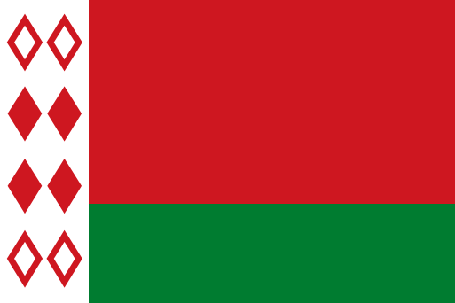
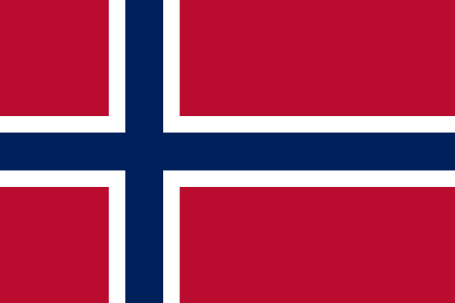

Europa
Con quali paesi confina la Russia?
La Russia confina con 14 paesi: Azerbaigian, Bielorussia, Cina, Corea del Nord, Estonia, Finlandia, Georgia, Kazakistan, Lettonia, Lituania, Mongolia, Norvegia, Polonia e Ucraina. I confini con l'Azerbaigian, la Cina, la Corea del Nord, la Georgia, il Kazakistan e la Mongolia uniscono due continenti diversi.
Vedi la Russia sulla mappa interattiva →
Paesi confinanti della Russia
 Azerbaigianaltro continente: Asia
Azerbaigianaltro continente: Asia
Bielorussia Cinaaltro continente: Asia
Cinaaltro continente: Asia Corea del Nordaltro continente: Asia
Corea del Nordaltro continente: Asia Estonia
Estonia Finlandia
Finlandia Georgiaaltro continente: Asia
Georgiaaltro continente: Asia Kazakistanaltro continente: Asia
Kazakistanaltro continente: Asia Lettonia
Lettonia Lituania
Lituania Mongoliaaltro continente: Asia
Mongoliaaltro continente: Asia
Norvegia Polonia
Polonia Ucraina
Ucraina
Per numero di paesi confinanti la Russia è al 1° posto nel mondo, a pari merito con la Cina.
Scheda della Russia
- Capitale
- Mosca
- Lingue ufficiali
- Russo
- Valuta
- Rublo russo (RUB)
- Continente
- Europa
- Superficie
- circa 17.098.000 km²
- Paesi confinanti
- 14
Altri paesi in Europa
- Albania
- Andorra
- Austria
- Belgio
- Bielorussia
- Bosnia ed Erzegovina
- Bulgaria
- Cechia
- Cipro
- Città del Vaticano
- Croazia
- Danimarca
- Estonia
- Finlandia
- Francia
- Germania
- Grecia
- Irlanda
- Islanda
- Italia
- Kosovo
- Lettonia
- Liechtenstein
- Lituania
- Lussemburgo
- Macedonia del Nord
- Malta
- Moldavia
- Montenegro
- Norvegia
- Paesi Bassi
- Polonia
- Portogallo
- Principato di Monaco
- Regno Unito
- Romania
- San Marino
- Serbia
- Slovacchia
- Slovenia
- Spagna
- Svezia
- Svizzera
- Ucraina
- Ungheria